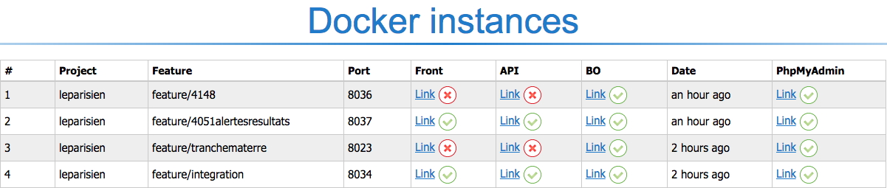
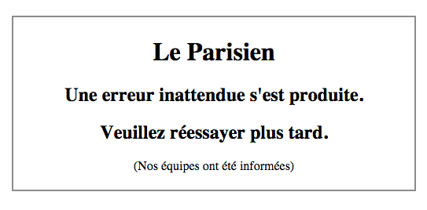
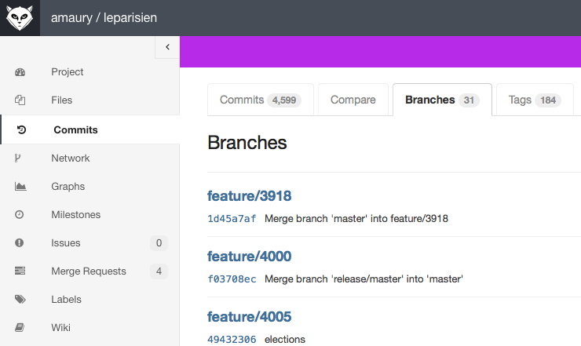
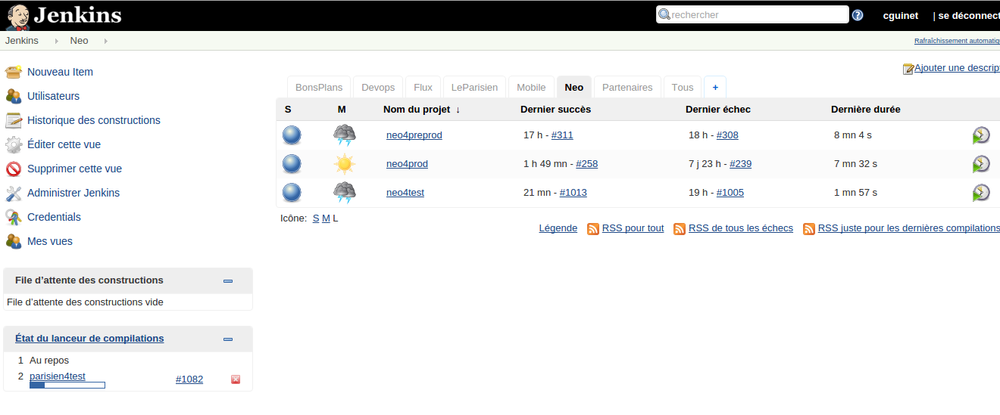

Your browser doesn't support the features required by impress.js, so you are presented with a simplified version of this presentation.
For the best experience please use the latest Chrome, Safari or Firefox browser.
Deux utilisations :
- - Environnement de développement
-
- - Environnements de recette et preproduction
Pourquoi Docker au Parisien ?
- - Problème de blocage de la preprod
-
- - Pas très facile de s'y retrouver
-
- - Environnement non iso avec la prod
Ce qui change
- - Instances indépendantes : plus de blocage
-
- - Des environnements iso prod
-
- - Possibilité de lier des instances entre elles
-
- - Une url pour s'y retrouver : docker.leparisien.fr
Un coup d'oeil au Process
- - Développements sur des features (branches)
-
- - Push de la feature
-
- - Création automatique d'une instance de docker
-
- - Apparition de l'instance sur docker.leparisien.fr

- Liens vers front, api, neo, bdd, bo
- Disponible pour les projets :
- - leparisien
- - neo/api
- - site-mobile
Développeurs et intégrateurs ...Que l'indexation ElasticSearch soit terminée,
Attendre tu devras!

- La recette doit se faire sur les instances docker
-
- Attention :
-
- - Les ports des instances peuvent changer!
-
- - Pensez à recharger la page des instances
Passage en preprod
:
- Si la recette est validée :
-
- - M/R de feature vers release/master
-
- - Recette minimaliste sur la preprod
-
- - Vérification des principales fonctionnalités

Passage en prod
- Si la preprod est opérationnelle :
-
- - M/R de release/master vers master
-
- - Validation de la demande
Notre serviteur discret, Jenkins
- - Les push, mises en preprod et production sont en réalité orchestrées par Jenkins
-
- - Possibilité de suivre l'ensemble des push et déploiements
-
- - Les erreurs sont facilement identifiables

Futur et Améliorations
- - Nous sommes toujours en phase d'experimentation !
-
- - Un projet redmine a été ouvert pour les retours concernant le fonctionnement docker
-
- - A plus long terme, utilisation de scénarios, test fonctionnel (sélénium ) pour recetter la preprod global
Conclusions
- Toujours en quête :
-
- - d'améliorations
- - de stabilisation
-
- - N'hésitez pas à partager, proposer des idées !!